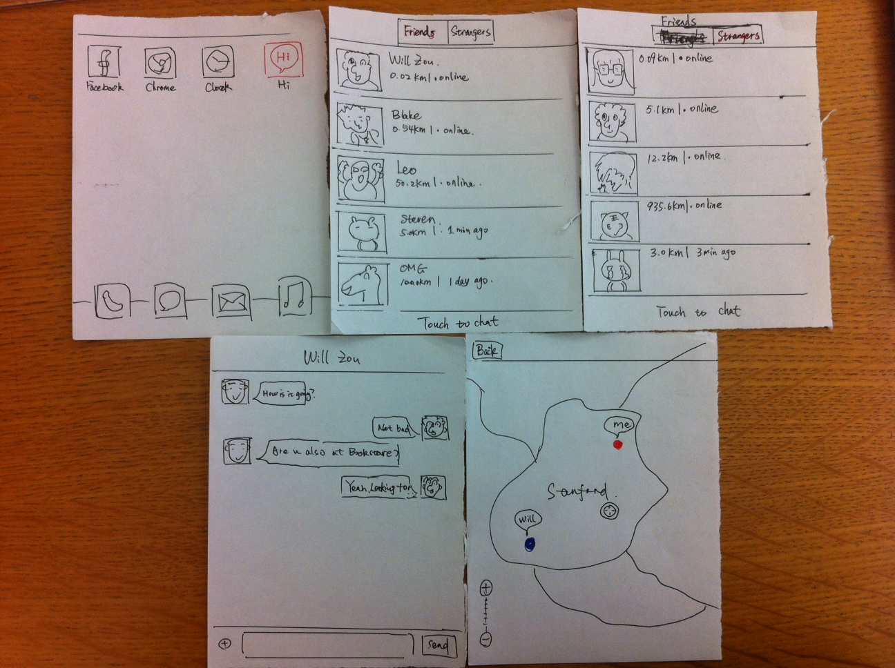
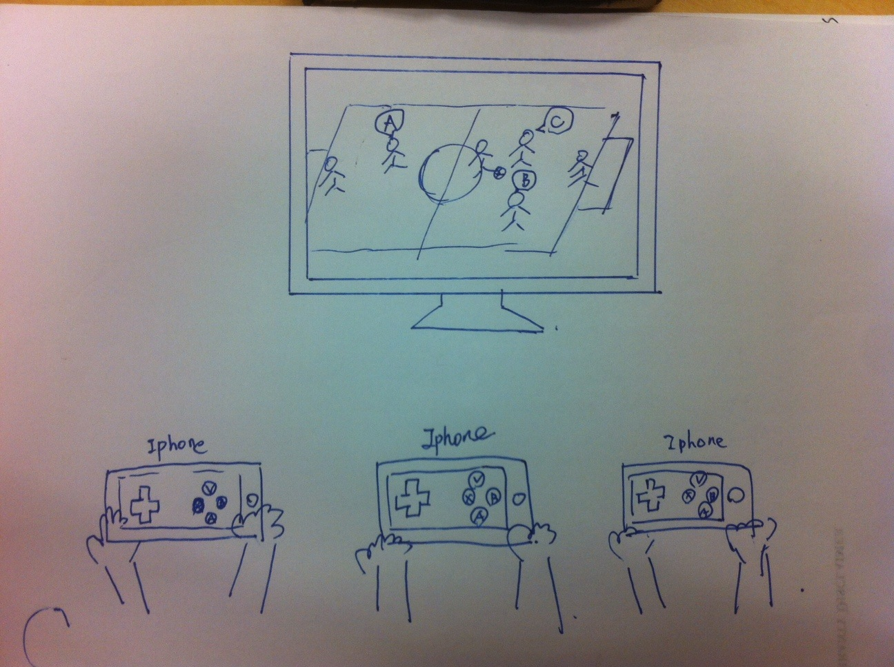

Assignment 1, Evaluation Training
Brainstorming
- Mobile app, which shows all you friends who are idling similar as you. You can chat with them.
- Big TV playing sports events.
- Register phone number at the front door. Receive SMS reminder when it's your turn. People don't need to wait in line actually.
- People pick up magazines at front door and return/buy it when leaving.
- Get waiting number card/name at front door, and wait for the call. People don't need to wait in line.
- Mobile app, shake for new things/new people
- Awards for lucky position in line
- Put attractive items along side the line so that customers browse or even buy.
- Time killing games: Tetris, PacMan
- Bump app to change contact information with people around you.
- Story-telling apps, read short news or check personal emails on app.
- Check in location by four-square-like app and shared on facebook-like app.
- Use a place holder to hold the place, during which time customer can relax a little bit, restroom...
- Online-appointment to remove the line.
- Time to do nothing and relax
- Hire people for standing in the line, for example, people paid for the IPHONE5 queues.
- Give them some free snack to enjoy!
- Share you comments on yelp-like app
- Give a surprise call to friends
- Listen to music on pandora-like app
- Play a multiplayer game with nearby users
- Use phone as controller for the game, which is displayed on the tv-screen.
Prototypes
Prototype A: Mobile App "Hi"
It allows people to catch up with existing friends or say hi to strangers who are also available to chat.

Prototype B: TV-Mobile Interactive Game
Play interactive game on TV using your iPhone with others when waiting in line.

Insights
- A large portion of people like to browse their cell phones when waiting in line.
- People are happy to chat with friends when waiting in line.
- People like to the idea to catch up with friends who are also waiting in line or doing nothing in this app.
- People like the idea to chat nearby strangers.
- People like the idea to rank people by distance.
- Most interviewees are willing to use this app.
- This app should have a more attractive name, like "catch up", "talk".
- It's sometimes odd to talk to strangers.
- It might not have so many people available to talk.
{kind=link}
{kind=link}
{kind=link}